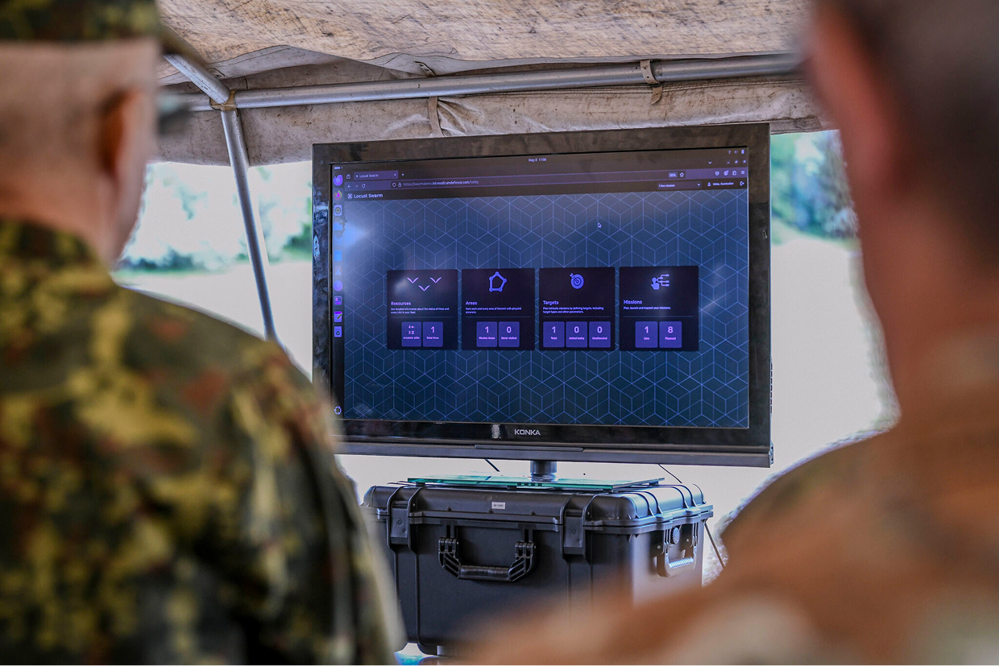
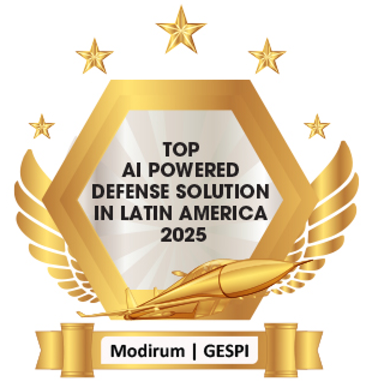

Product Design
Locust Swarm
Context
Modirum Gespi’s Tampere office was a small, R&D-oriented team of software developers exploring how large fleets of UAVs could be operated with limited pilot availability. They were in the process of gathering initial requirements and building what they could to get ahead of the competition.
The team was keenly aware that good UX would make or break the solution, as the end users would be using the system under high cognitive burden, with little patience for complex software. I joined the company as the first designer to deliver on this, build the design function and a framework for cross-functional collaboration between design and other teams.
Problem
Defence forces want to coordinate fleets of UAVs strategically and UAVs can be procured en masse for this purpose, but pilots cannot. Translating these kinds of needs into a simple, usable software solution that could be utilized in high-stakes operational use was the core design challenge. In parallel to solving this, I was building a design team and a design process.
Process
I dug into the requirements, the research it was based on and the military domain. I began the design work by defining the core mission planning flow, designing and delivering UI components incrementally in Figma for implementation. I collaborated closely with developers, integrating their feedback into the designs to ensure feasibility and performance.
As the product matured, I recruited and onboarded another designer, which allowed us to get ahead of development, build a design system, and reduce design debt. AI was being heavily utilized by development, and design also has had an opportunity to learn to utilize tools like Figma Make for speeding up the design process.
I participated in field testing and demonstrations around the world for military clients, learning to operate UAVs as a safety pilot to better understand end-user needs. I translated the end-user feedback directly from operators and engineers in the field into actionable improvements to the design of the final product.

Solution
We developed an intuitive, map-based interface for resource management, mission planning and execution. The system supports ISR and strike operations, among others, across UAV swarms controlled by a single operator, while maintaining clear situational awareness and the ability for human intervention at any moment. While I can’t share much, I can share this video of the solution in action:
Impact
Locust Swarm evolved from concept to a fully productized product, which was successfully deployed in live UAV demonstrations for international defence clients and has received recognition. For me, the project provided many opportunities for growth, expanding my skillset with project and product management, as the project moved into productization, certification, and formal release preparation.
